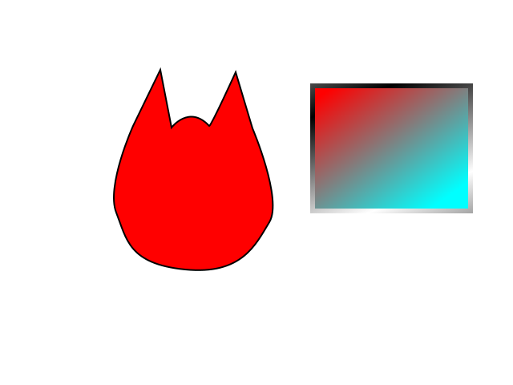

https://www.youtube.com/watch?v=IM8eTD01UE8
SVG is vector image
Scalable vector graphics
Google editor
https://github.com/SVG-Edit/svgedit
https://github.com/SVG-Edit/svgedit
https://svg-edit.github.io/svgedit/releases/svg-edit-2.8.1/svg-editor.html
tworzenie
opcje obrazka tytuł
export do png, jpeg
zapisz plik - data;base64
Scieżka
-------------------------
SVG ilustracje, loga, ikony
CSS===================
manipulacje
css
hover
transform
transition
Adobe Ilustrator
export as svg
https://msdn.microsoft.com/pl-pl/library/kurs-html5--svg--transformacje.aspx

zapis jako data

svg embed